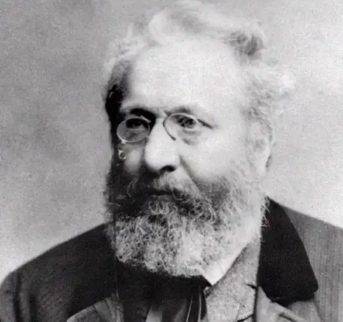
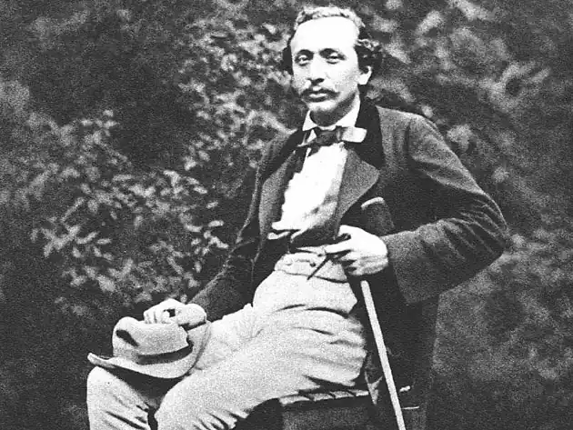

Ян Неруда (Jan Nepomuk Neruda; 09 липня 1834, Прага — 22 серпня 1891, там само) — чеський письменник.
Біографія
Ян Неруда народився у Празі. Його батько був відставним солдатом, тримав крамничку, яка майже не приносила прибутків. Дитячі та юнацькі роки Неруда проминули в одному з наймальовничіших районів Праги — Малій Страні, яку він потім неодноразово зображуватиме у своїх творах. Початкову освіту Н. здобув у Празькій академічній гімназії. На той час це була єдина гімназія, де дозволялося викладання чеською мовою. Директором цієї гімназії був відомий письменник-драматург В. Кліцпера, котрий намагався виховувати у своїх учнях патріотичні почуття. Під його впливом Неруда зацікавився літературою і спробував писати сам. У 1853 році Неруда вступив у Празький університет. Спочатку він навчався на юридичному, а згодом на філософському факультетах, посилено студіюючи мову та літературу. Після закінчення університету певний час Неруда вчителював. З кінця 50-х pp. він став професійним письменником. Свою літературну діяльність Неруда розпочав як журналіст, влаштувавшись у 1856 р. репортером в одну із німецьких газет. Одночасно він пробував себе у поезії: у 1858 р. вийшла друком його перша поетична збірка, яку, проте, чеська критика зустріла дуже прохолодно. Невдача не розчарувала Неруда, і він продовжував поєднувати кар'єру журналіста і поета і, крім того, намагався писати й художню прозу. Але найінтенсивнішою у ці роки була діяльність Н. як журналіста. Разом з поетом В. Галеком він заснував у 1858 р. літературний альманах "Травень" ("Maj"), навколо якого почало гуртуватися молоде письменницьке покоління, з яким пов'язують перші кроки чеського реалізму, ідейним лідером і натхненником якого став Неруда. У 60-х pp. австрійський уряд дозволив друк чеської періодики. У цей час Неруда співпрацював з багатьма періодичними чеськими виданнями, зокрема, вів рубрику "Культура" у газетах "Час", "Голос", "Народні листки". Упродовж близько 20-ти років він виступав з рецензіями на нові книжкові видання, спектаклі, виставки. Значну частину своєї публіцистики Неруда видав у двох збірках дорожніх нарисів "Паризькі малюнки" ("Pafizske obrazky", 1864) та "Малюнки з чужини" ("Obrazyzciziny", 1879). Решта публіцистичного спадку Неруда займає п'ять томів і торкається найрізноманітніших сфер чеського життя, починаючи від літератури та мистецтва і закінчуючи гумористичними описами побуту та звичаїв чехів. Життя самого Неруда було небагатим на зовнішні події. На межі 60—70-х pp. він здійснив мандрівку країнами Європи, під час якої відвідав Німеччину, Францію, Словаччину, Далмацію. Угорщину, Італію і Близький Схід. Мешкав постійно у Празі. Його особисте життя було невлаштованим. Неруда пережив два глибокі, але невдалі кохання: до Ґанки Голіновоїта відомої письменниці Кароліни Свєтлої. До останніх днів свого життя Неруда брав активну участь у розвитку чеської культури, підтримував молодих митців і сприяв їхньому творчому становленню. Крім великої кількості літераторів, яким Неруда відкрив шлях у літературу, він також був першим, хто по-справжньому оцінив талант знаменитого чеського композитора М. Дворжака, художник.; А. Косарека та ін. В останні роки свого життя Неруда важко хворів і помер 22 серпня 1891 р. у вій: 57 років. Похований він у Празі, на Вишегралському кладовищі. У чеську літературу Н. увійшов не тільки як визначний публіцист, а й як поет і прозаїк Поетична творчість Н. розпочинається у 1857 p.. коли вийшла його перша збірка віршів під назвою "Цвинтарні квіти" ("Hfbitovni kviti"). Ця збірка присвячена пам'яті одного із друзів, котрий передчасно помер. Загалом, вірші збірки є типовим зразком романтичної лірики. Поет пише про гіркі розчарування у житті, у почуттях, у коханні; висловлює нездійсненні мрії та сподівання. Нова поетична збірка, яка вийшло друком через десять років, називалася "Knues віршів" ("Knihy versu"). Сюди ввійшли як нові твори, так і кращі вірші попередньої збірки "Книга віршів" складається з трьох частин: у першій подаються вірші епічні, у другій — ліричні та ліро-епічні, а в третій — вірші, написані як відгуки на конкретні злободенні події чеського суспільного життя. Протест проти соціального та національного гноблення чеського народу виражений тут уже глибше, з більшою художньою переконливістю та силою критичного пафосу. Перед читачем проходить ціла вервечко образів, переважно представників міських низів, які змальовані у самому процесі життя, в різноманітних обставинах трудового побуту: Піч палає, дід щохвилі гріє Руки шерхлі, мов суха лоза. Круг вертиться, син чамріє — Дерев'яну миску виріза. Круг шумить собі затято, У внучати очі аж горять: "Научи мене!" — "Нащо ті муки Для твоїх маленьких рученят?"— "Як твої тремтіти будуть руки, Щоб для тебе миску вирізать". Піч палає, згорбивсь дід і плаче, Син припав до тих старечих рук. Круг мовчить, а внук навколо скаче: "Тату, чом не крутиться цей круг?" ("Дідова миска", пер. Д. Чередниченка) Важливе місце у збірці займають вірші про роль поета та поезії в суспільстві. Ідеал Неруда — це поет-громадянин, котрий присвячує свою творчість суспільному служінню. У 1878 p. Неруда видав нову поетичну збірку "Космічні пісні" ("Pisne kosmicke"), де виокремлюються три тематичні лінії: уславлення величі Всесвіту, філософські роздуми про долю людства, захоплення творчими здобутками людини, могутністю її розуму, перед яким розкриваються усі таємниці міжзоряного простору. Майже одночасно Неруда виступив і як прозаїк. Його перше оповідання "Моєму горобцеві" було опубліковане у 1859 р. У 1864 р. він видав збірку оповідань "Арабески" ("Arabesky"), у яких першим з-поміж чеських письменників повномасштабно ввів у чеську прозу тему міста. Мандрівками Неруда країнами Європи та Близького Сходу навіяна збірка оповідань "Різні люди" ("Ruzni lide", 1871). Як і раніше, письменник концентрує свою увагу не на подіях, а на людських характерах. Сюжети цих творів, як правило, нескладні, насичені яскравими побутовими деталями та тонкими психологічними спостереженнями. Як і в попередніх творах, розповідь автора пронизана інтонаціями м'якого гумору. У 1872 р. з'явилася повість Неруда "Босяки" ("Trhani"), присвячена життю та праці робітників, зайнятих на будівництві залізниці. Найвизначнішим із прозових здобутків Неруда стала збірка "Малостранські повісті" ("Povidky malo-stranske"), яка вийшла друком у 1878 р. Дія всіх повістей відбувається в одному з районів Праги — Мала Страна, звідки і назва книги "Малостранські повісті" — це не збірка, а тематичний цикл, жанрову специфіку якого визначає його перехідний характер. З одного боку, кожна з повістей — це самостійний, тематично і сюжетно завершений твір, а з іншого, всі повісті пов'язані цілим рядом спільних рис. їх єднає не тільки місце дії, а й тип проблематики і пов'язані з нею конфлікти та герої, єдність стилістичної й ідейної позиції оповідача. Збірка складається з 13 повістей, з яких перша — "Тиждень у тихому будинку" — і остання — "Фігурки" — значно перевищують усі інші за обсягом. Першу і останню повість книги зближує і однотипність принципів їхньої внутрішньої побудови. Обидві повісті побудовані у формі розповіді про життя мешканців одного малостранського будинку, решта одинадцять повістей циклу при цьому виконують функцію додаткового розкриття вже створеного образу Малої Страни, вносять до нього нові деталі. В основі їхніх сюжетів — якийсь дотепний чи незвичайний епізод з життя малостранця. У тематичному плані можна виокремити дві групи "малостранських" повістей. У першій змальовані специфічні умови і спосіб життя середньостатистичного чеського буржуа — дрібного службовця, домогосподаря (власника будинку), торговця, лікаря, студента і т.д. ("Тиждень у тихому будинку" , "Пан Ришанек і пан Шлегл" , "Лікар Всіхгубив" , "Як пан Ворел обкурював свою люльку", "Фігурки" й ін.). У центрі всіх цих творів психологія і взаємовідносини "малостранців", конфлікти, які виникають між ними на побутовому ґрунті, та різні дивацтва, пов'язані з рисами їхніх характерів. Друга тематична група представлена двома "дитячими" повістями — "Меса Св. Вацлава" і "Чому Австрія не була розгромлена 20 серпня 1849 року о пів на першу дня ". З 80-х pp. XIX ст. Неруда займався переважно публіцистикою та поезією. У 1883 р. він розпочав видання дешевої серії найкращих творів чеської поезії "Поетичні розмови". Цю серію Неруда відкрив виданням своєї нової поетичної збірки "Балади та романси" ("Balady a romance"). Програма збірки була сформульована в епіграфі, яким вона відкривалася: "Я кличу прості слова, щоби нагадати давні легенди, де душа народу жива". Балади та романси цієї збірки — це невеличкі ліро-епічні твори з чітко вираженою сюжетною побудовою або ж жанрові замальовки. Того ж року Неруда видав ще одну поетичну збірку "Прості мотиви" ("Proste motivy"), у якій переважають твори інтимної лірики. У 60-х pp. Неруда, котрий упродовж усього свого життя писав епіграми, почав готувати до друку "Книгу епіграм", яка так і не вийшла. Остання поетична збірка Неруда — "Пісні страсної п'ятниці" ("Zpevy Patecni") була видрукувана у 1896 р., тобто через п'ять років після смерті поета. Вірші цієї збірки — це своєрідний творчий заповіт поета, а назва її — глибоко символічна. Поет розповідає про страждання свого народу, своєї батьківщини, вдаючись до образу розіп'ятого Христа, котрий пережив муки страсної п'ятниці і дочекався світлого та радісного воскресіння.